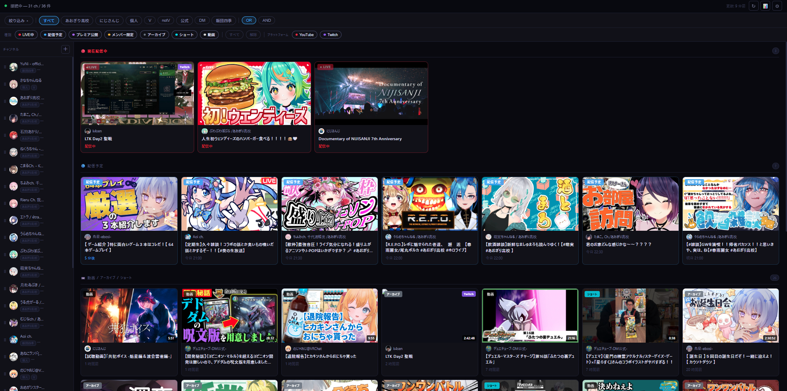
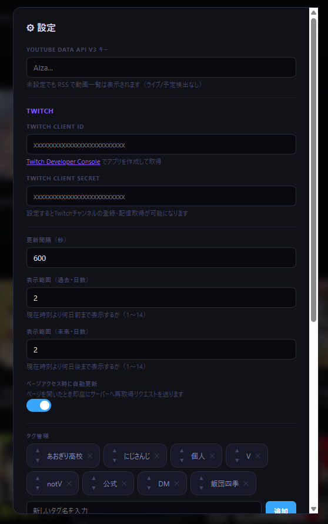
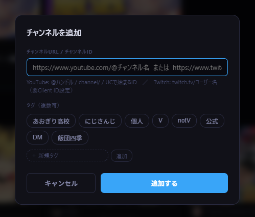
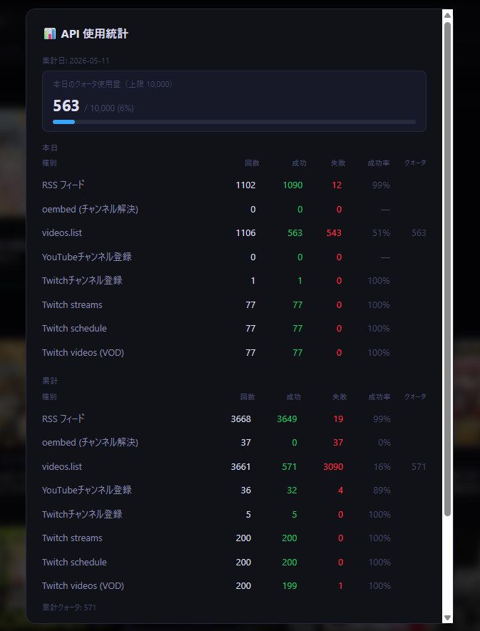

登録チャンネルの配信・動画を自動取得して一覧表示する
ローカルネットワーク向け Web アプリ
📦 GitHub Releases から Livelist_vX.X.X.zip をダウンロードしてください。
| ファイル | 説明 |
|---|---|
Livelist_vX.X.X.zip | exe 版（Python インストール不要） |
解凍して Livelist.exe を起動するだけで使えます。
※ 画像は開発中の画面です。実際の表示と一部異なる場合があります。




用途に合わせて 3 つの起動方法があります。
| ファイル | 動作 | 用途 |
|---|---|---|
Livelist.exe |
コンソールウィンドウあり | 通常使用。ログを確認しながら運用したいとき |
LivelistBG.exe |
ウィンドウなし・バックグラウンド | 常駐させたいとき・スタートアップ登録用 |
start.bat |
LivelistBG.exe 優先、なければ Livelist.exe、なければ Python |
手動で再起動したいとき（既存プロセスを自動終了して再起動） |
起動後、ブラウザで以下にアクセスしてください。
http://localhost:8080
起動直後にページが空の場合は、しばらく待ってから ↻ ボタンを押すか F5 でリロードしてください。初回は API への問い合わせが完了するまで数秒〜数十秒かかります。
起動時に黒いウィンドウ（コンソール）が開きます。サーバーの動作ログが表示され、閉じるとサーバーも終了します。 使用中は最小化して残してください。
ウィンドウが一切表示されず、タスクバーにも現れません。タスクマネージャーのプロセス一覧に LivelistBG.exe として表示されます。停止するには stop.bat を実行するか、タスクマネージャーからプロセスを終了してください。
Windows のタスクスケジューラーを使って、ログオン時に自動でバックグラウンド起動できます。
register-startup.bat をダブルクリックします。LivelistBG.exe が存在する場合はそれを、なければ Livelist.exe、それもなければ Python で起動するよう自動判別して登録します。
register-startup.bat をダブルクリックy を入力すると即座にバックグラウンド起動unregister-startup.bat をダブルクリックすると自動起動が解除されます。実行中のサーバーは停止しません。
タスクスケジューラー（taskschd.msc）を開き、「タスクスケジューラーライブラリ」に Livelist が表示されていれば登録されています。
移動・リネーム後は再登録が必要: フォルダを移動した場合、タスクスケジューラーに登録されたパスが古いままになります。register-startup.bat を再度実行して登録し直してください。
サイドバーの ＋ ボタンから URL を入力して追加します。
| プラットフォーム | 対応形式 | 例 |
|---|---|---|
| YouTube | @ハンドル URL | https://www.youtube.com/@チャンネル名 |
| YouTube | channel/ URL | https://www.youtube.com/channel/UCxxxxxx |
| YouTube | チャンネル ID | UCxxxxxx（UC から始まる 24 文字） |
| Twitch | チャンネル URL | https://www.twitch.tv/ユーザー名 |
サブチャンネルが登録できない場合: YouTube のサブチャンネルはメインチャンネルと内部 ID が同一になることがあります。その場合「既に登録済み」として弾かれますが、メインチャンネルより先にサブチャンネルを登録すると解決する場合があります。登録順を変えてお試しください。
未設定でも RSS で動画一覧は表示されますが、設定すると LIVE・配信予定の正確な検出 が可能になります。
console.cloud.google.com）でプロジェクトを作成クォータ上限: 1日 10,000 ユニット（videos.list1ユニット/コール、1コールで最大50件処理）。
📊 ボタンで使用量を確認できます。
目安: チャンネル数 30・24 時間稼働の場合、更新間隔 900 秒（15 分） がクォータ上限に収まる目安です。
dev.twitch.tv/console）に Twitch アカウントでログインLivelist）http://localhostApplication Integration注意 Client Secret はページを閉じると二度と表示されません。必ず保存してください。
Twitch API はクォータ制限なし。アクセストークンは自動取得・自動更新されます。
上部バーのタグボタンをクリックしてチャンネルを絞り込みます。複数選択可能です。タグに属さないチャンネルはサイドバーの「タグ外」セクションに薄く表示されます。
タグバーの右端に常時表示される OR / AND ボタンで絞り込みモードを切り替えられます。
選択したモードはブラウザに保存されます。タグ絞り込みを変更すると、特定チャンネルへの絞り込み（個人モード）は自動的に解除されます。
「絞り込み ▾」ボタンをクリックするとパネルが開き、表示する種別を個別に ON/OFF できます。
| 種別 | 内容 |
|---|---|
| LIVE中 | 現在配信中 |
| 配信予定 | スケジュール済みの配信 |
| プレミア公開 | YouTube プレミア |
| メンバー限定 | タイトルにキーワードを含むコンテンツ |
| アーカイブ | 配信の録画・Twitch VOD |
| ショート | 180 秒以内の動画、またはタイトルにショートキーワードを含む動画（YouTube） |
| 動画 | 通常の動画 |
絞り込み中はステータスバーに 表示件数 / 総件数 が表示されます。選択状態はブラウザに保存されます。
サイドバーのチャンネル名（またはアイコン）をクリックすると、そのチャンネルだけを表示します。もう一度クリックで解除。
サイドバーの ⠿ をドラッグして並び順を変更できます。
| ↻ | 手動で最新データを取得（キャッシュを破棄して再取得） |
| 📊 | API 使用量・成功率の統計を表示 |
| ⚙ | API キー・タグ・メンバー限定キーワード・ショートキーワードなどの設定 |
Livelist/
├── Livelist.exe ← 通常起動（コンソールあり）
├── LivelistBG.exe ← バックグラウンド起動（ウィンドウなし）
├── index.html ← Web UI（ダブルクリックでブラウザ表示・改変用）
├── start.bat ← 手動再起動
├── register-startup.bat ← スタートアップ登録
├── unregister-startup.bat ← スタートアップ解除
├── config.json ← 設定（APIキーなど）
├── README.html ← このファイル
│
├── asset/ ← 静的アセット＋自動生成データ
│ ├── favicon.ico ← ブラウザタブアイコン（32/16px）
│ ├── icon-180.png ← Apple Touch Icon（180px）
│ ├── icon-192.png ← Web アプリアイコン（192px）
│ ├── icon-512.png ← Web アプリアイコン（512px）
│ ├── channels.json ← 登録チャンネル一覧（起動時に自動作成）
│ ├── cache.json ← 配信情報キャッシュ
│ ├── tags.json ← タグ一覧
│ └── api_stats.json ← API 使用統計
│
├── source/ ← 改変・ビルド用（exe のみ使う場合は不要）
│ ├── server.py ← サーバー本体（Python で直接起動も可）
│ ├── build.bat ← exe をビルドするスクリプト
│ ├── livelist.spec ← PyInstaller 設定
│ └── icon.ico ← exe アイコン（256/128/64/48/32/16px）
│
└── tests/ ← 単体テスト（Python 3.12 + unittest）
├── test_classifier.py ← ストリーム分類・shorts/member 判定
└── test_url_parser.py ← URL パターン・稼働時間ロジック
exe 版の動作:Livelist.exe/LivelistBG.exeはどちらもindex.htmlを内部に同梱しています。config.jsonはルートに、チャンネル・キャッシュ・タグなどのデータはasset/フォルダに自動で読み書きされます。asset/フォルダがなければ起動時に自動生成されます。
| キー | デフォルト | 説明 |
|---|---|---|
youtube_api_key | "" | YouTube Data API v3 キー |
twitch_client_id | "" | Twitch アプリの Client ID |
twitch_client_secret | "" | Twitch アプリの Client Secret |
port | 8080 | サーバーポート番号 |
refresh_interval | 600 | 自動更新間隔（秒） |
days_past | 2 | 過去方向の表示範囲（日数）。現在時刻より何日前まで表示するか（1〜14） |
days_future | 2 | 未来方向の表示範囲（日数）。現在時刻より何日後まで表示するか（1〜14） |
member_keywords | 既定の 6 語 | メンバー限定判定キーワード（⚙設定から編集可） |
shorts_keywords | 既定の 5 語 | ショート判定キーワード（⚙設定から編集可） |
operating_hours | {"enabled":false,"start":"08:00","end":"23:00"} | 稼働時間設定。enabled を true にすると時間外の自動更新を停止。終了が開始より早い場合は深夜またぎ（例: 22:00〜02:00）。⚙設定から変更可。手動更新・ページアクセス時の更新は時間外でも常に有効 |
member_keywords のデフォルト値:
メン限/メンバー限定/メンバーシップ限定/member only/members only/メンバー専用
shorts_keywords のデフォルト値:
#shorts/#short/#ショート/short/ショート
180 秒以内の動画も自動的にショートと判定されます。キーワード判定が優先されるため、180 秒を超える動画もキーワードがあればショートに分類されます。
サーバー起動時にコンソールに表示されるネットワークアドレス（例: http://192.168.0.xxx:8080）に、同じ LAN 内の別端末からアクセスできます。バックグラウンド起動時はコンソールが表示されないため、ブラウザから http://localhost:8080 にアクセスしてページが開けば起動済みです。
ファイアウォールの許可: 初回起動時に「このアプリのネットワークアクセスを許可しますか？」という Windows Defender ファイアウォールのダイアログが表示される場合があります。LAN 内からアクセスするには 「プライベートネットワーク」を許可 してください。LivelistBG.exe では初回のみダイアログが出ます。
ThreadingHTTPServer をベースにしたシンプルな HTTP サーバーですrefresh_interval 秒ごとに API・RSS を巡回し、cache.json に書き込みますconfig.json の "port" を変更してサーバーを再起動すると、指定したポートで起動します。
"port": 9090
変更後はブラウザのアクセス先も変更してください（例: http://localhost:9090）。スタートアップ登録済みの場合は再登録不要です。
index.html を内部に同梱しているため、外部の index.html を編集しても反映されません。UI を変更した場合は build.bat で再ビルドしてください| レイヤー | 技術 | 備考 |
|---|---|---|
| サーバー言語 | Python 3.12+ | 外部パッケージ不要（標準ライブラリのみ） |
| HTTP サーバー | http.server.ThreadingHTTPServer | マルチスレッド対応の標準実装 |
| HTTP クライアント | urllib.request | requests 等の外部ライブラリ不使用 |
| XML パース | xml.etree.ElementTree | YouTube RSS の解析に使用 |
| フロントエンド | Vanilla JS / HTML / CSS | フレームワーク・ビルドツール不使用、単一ファイル |
| データ保存 | JSON ファイル（ローカル） | DB 不使用。atomic replace（tmp → rename）で書き込み |
| パッケージング | PyInstaller 6.x | index.html を exe に同梱、--onefile ではなく --onedir |
| 型定義 | TypedDict / NotRequired / Literal | StreamDict / ChannelDict などで主要スキーマを型付け |
| テスト | Python unittest（標準ライブラリ） | tests/ に 54 件。分類ロジック・URL パーサー・稼働時間を網羅 |
refresh_loop（refresh_interval 秒ごと、稼働時間内のみ）
│
├─ [YouTube チャンネルごと]
│ ├─ YouTube RSS フィード … クォータ消費なし
│ │ └─ 最新 15 件の動画 ID を取得
│ └─ videos.list（50件/コール） … 1 ユニット/コール
│ └─ type / duration / scheduledAt を付与
│
├─ [Twitch チャンネルごと]
│ ├─ Helix streams API … クォータなし
│ ├─ Helix schedule API … クォータなし
│ └─ Helix videos API（VOD） … クォータなし
│
├─ _recheck_pinned … 1 ユニット/コール
│ └─ キャッシュ中の upcoming/live を videos.list で再確認
│ 終了済み・削除済みを除外し、開始済みを live に昇格
│
└─ cache.json に atomic write
↓
[ブラウザ] GET /api/streams → キャッシュ返却（即時）
1回の更新あたり消費ユニット数（YouTube） = ceil( RSS取得動画数合計 / 50 ) ← fetch_youtube_streams + ceil( upcoming/liveキャッシュ数 / 50 ) ← _recheck_pinned 1日の消費量（目安） = 上記 × floor( 86400 / refresh_interval ) 例: 30チャンネル・各15件・pinned=5件・refresh_interval=900（15分） = ( ceil(450/50) + ceil(5/50) ) × 96 = ( 9 + 1 ) × 96 = 960 ユニット/日
| Method | Path | 説明 |
|---|---|---|
| GET | /api/streams | キャッシュ済みストリーム一覧（JSON 配列） |
| GET | /api/channels | 登録チャンネル一覧 |
| GET | /api/config | 設定値（APIキー・Secret はマスク済み） |
| GET | /api/status | 接続状態・最終更新時刻・稼働時間状態 |
| GET | /api/stats | API 使用統計（日次・累計・履歴） |
| GET | /api/tags | タグ一覧 |
| POST | /api/channels | チャンネル追加（URL 解決 → 即時更新） |
| POST | /api/refresh | 手動更新トリガー（非同期） |
| POST | /api/config | 設定保存 |
| POST | /api/tags | タグ追加 |
| POST | /api/tags/reorder | タグ並び替え |
| POST | /api/channels/reorder | チャンネル並び替え |
| PUT | /api/channels/:id | チャンネル名・タグ編集 |
| DELETE | /api/channels/:id | チャンネル削除（キャッシュも除去） |
| DELETE | /api/tags/:name | タグ削除（チャンネルからも除去） |
全エンドポイントにAccess-Control-Allow-Origin: *を付与。file://から開いたindex.html経由でのローカルアクセスに対応しています。
{
"id": "動画ID（YouTube）/ ユーザーID（Twitch）",
"channelId": "チャンネルID",
"channelName": "チャンネル名",
"channelThumbnail":"チャンネルアイコン URL",
"title": "タイトル",
"url": "視聴 URL",
"thumbnail": "サムネイル URL",
"platform": "youtube | twitch",
"type": "live | upcoming | premiere | archive | short | member | video",
"publishedAt": "ISO 8601",
"scheduledAt": "ISO 8601 | null",
"actualStart": "ISO 8601 | null",
"actualEnd": "ISO 8601 | null",
"duration": "ISO 8601 duration（PT1H2M3S）| null"
}
server.py と index.html をテキストエディタで編集し、start.bat（Python モード）で起動して確認できます。
Python 版では index.html を直接読み込むため、ファイルを保存してブラウザをリロードするだけで変更が反映されます（サーバー再起動不要）。
改変内容を exe に反映するには build.bat を実行します。Python 3.12 と PyInstaller が必要です。
python3.12 -m pip install pyinstaller ← 初回のみ build.bat をダブルクリック ← python3.12 を自動検出してビルド → Livelist.exe / LivelistBG.exe が配布フォルダに出力される
テストの実行:
python3.12 -m unittest discover -s tests -v
refresh_interval を短くするほどクォータ消費が増えます。📊 ボタンで使用量を確認しながら調整してくださいregister-startup.bat を再実行）Livelist — YouTube + Twitch 対応版